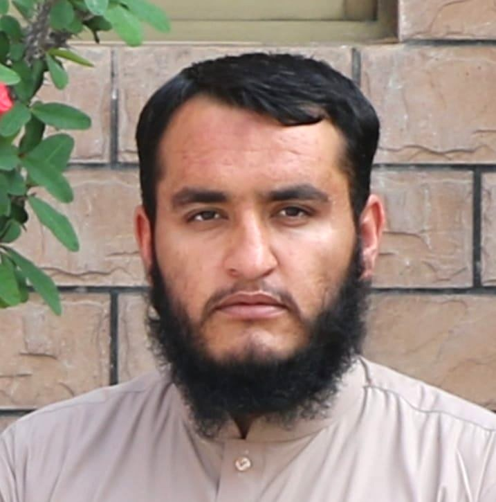
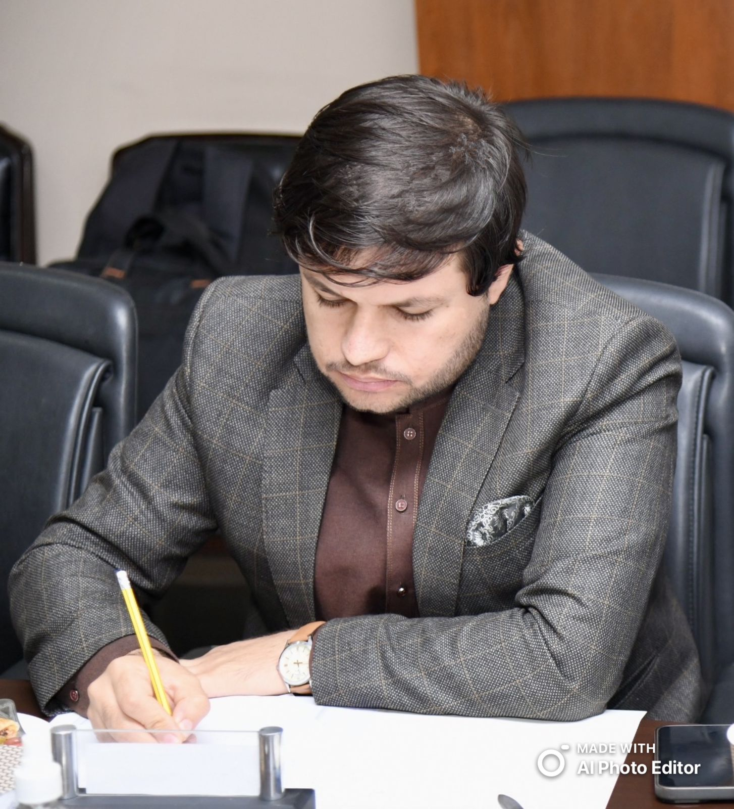
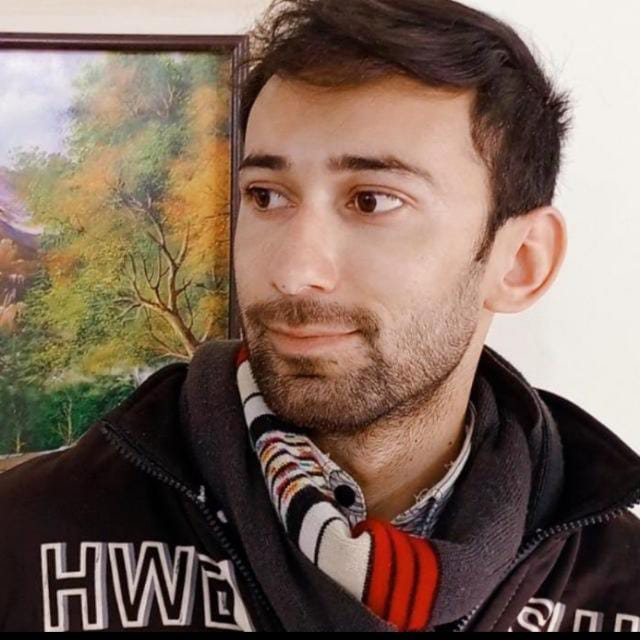
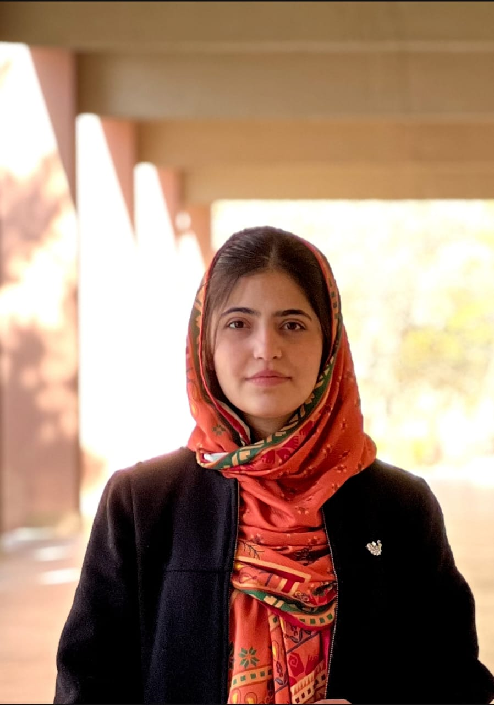

Meet Our Team

Mr. Niamat Ullah
Research Lead (GIS & Remote Sensing Expert)
Niamat Ullah received the M.Phil. degree in geospatial sciences (GIS & RS) from the National Center of Excellence in Geology (NCEG), the University of Peshawar, Pakistan, in 2023. He is currently with the SDSS Lab, NCGSA, Pakistan. He is the author of dozens of scientific research papers, books, and book chapters. His research interests include GIS, RS, natural hazards (floods, droughts), hydrology, climate change, and physical geography.

Syed Ahmed Shah
TEAM LEAD Specialist in Geospatial Systems & Remote Sensing
The research emphasizes innovative technological solutions for environmental sustainability and industrial advancement, with expertise in IoT, Industry 4.0, and ICT-based initiatives. Key work includes climate change mitigation, WSN deployment, and data-driven analysis using GEE, GIS, RS, and QGIS to support sustainability and informed decision-making.

SHAHZAIB KHAN
LAB TECHNICIAN, FULL STACK DEVELOPER & DATA ANALYST
Data Science for extracting insights from complex datasets, Machine Learning for building intelligent predictive models, and Full Stack Development for designing and deploying scalable web applications. It further integrates Creative Design Solutions using Adobe Photoshop, Illustrator, and Canva to deliver visually compelling and user-centric digital experiences

Bibi Ayesha Kasi
I am working on scientific research that combines GIS and spatial analysis for environmental monitoring with heavy metal assessment in soil, water, and vegetables using Atomic Absorption Spectroscopy (AAS). Additionally, it encompasses time-series analysis, Land Use/Land Cover (LULC) studies, and air quality monitoring through Google Earth Engine (GEE) to support data-driven research, decision-making, problem-solving, and critical thinking.

KHALID SHAH
My Research Area focuses on leveraging Generative AI and Agentic AI frameworks to enhance geospatial data science for decision support systems. I develop intelligent agents capable of automating complex workflows, integrating LLMs, and enabling adaptive, context-aware problem-solving for real-world spatial challenges.
SHAHZAIB KHAN
LAB TECHNICIAN, FULL STACK DEVELOPER & DATA ANALYST
Data Science for extracting insights from complex datasets, Machine Learning for building intelligent predictive models, and Full Stack Development for designing and deploying scalable web applications. It further integrates Creative Design Solutions using Adobe Photoshop, Illustrator, and Canva to deliver visually compelling and user-centric digital experiences